、
、  和
和  ，来预测输出
，来预测输出  。这些输入乘以权重
。这些输入乘以权重  、
、  和 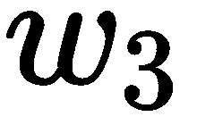 ，并汇总如下:
和 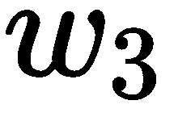 ，并汇总如下:深度学习是受人脑中神经网络启发的机器学习的子集。它已经存在十年了，但它现在如此流行的原因是由于计算的进步和大量数据的可用性。由于数据量巨大，深度学习算法的性能优于经典的机器学习。它已经在计算机视觉、自然语言处理 ( NLP )、语音识别等多个跨学科的科学领域得到了广泛的应用。
在本章中，我们将了解以下主题:
深度学习只是具有许多层的人工神经网络的现代名称。深度学习中的深度是什么呢？基本上是由于人工神经网络 ( ANN )的结构。ANN由一些 n 层组成，以执行任何计算。我们可以建立一个有几层的人工神经网络，每层负责学习数据中复杂的模式。由于计算技术的进步，我们甚至可以建立一个100或1000层深的网络。由于人工神经网络使用深层来执行学习，我们称之为深度学习，当人工神经网络使用深层来学习时，我们称之为深度网络。我们已经知道深度学习是机器学习的一个子集。深度学习和机器学习有什么不同？是什么让深度学习如此特别和受欢迎？
机器学习的成功在于正确的功能集。特征工程在机器学习中起着至关重要的作用。如果我们手工制作正确的特征集来预测某个结果，那么机器学习算法可以表现得很好，但找到和设计正确的特征集并不是一件容易的事情。
有了深度学习，我们就不用手工制作这样的功能了。由于深度人工神经网络采用几个层次，它自己学习复杂的内在特征和数据的多层次抽象表示。让我们用一个类比来探讨一下这个问题。
假设我们想要执行一个图像分类任务。比方说，我们正在学习识别一幅图像是否包含一只狗。通过机器学习，我们需要手工制作一些特征来帮助模型理解图像中是否包含一只狗。我们将这些手工制作的特征作为输入发送给机器学习算法，然后机器学习算法学习特征和标签(狗)之间的映射。但是从图像中提取特征是一项单调乏味的任务。通过深度学习，我们只需要向深度神经网络输入一堆图像，它就会通过学习正确的特征集来自动充当特征提取器。正如我们所了解的，ANN使用多个层；在第一层中，它将学习表征狗的图像的基本特征，例如狗的身体结构，在随后的层中，它将学习复杂的特征。一旦它学习到正确的特征集，它将在图像中寻找这些特征的存在。如果这些特征存在，那么它表示给定的图像包含一只狗。因此，与机器学习不同，使用DL，我们不必手动设计功能，相反，网络将自己学习任务所需的正确功能集。
由于深度学习的这一有趣方面，它主要用于难以提取特征的非结构化数据集，如语音识别、文本分类等。当我们拥有相当数量的庞大数据集时，深度学习算法擅长提取特征，并将提取的特征映射到它们的标签上。说了这么多，深度学习并不仅仅是把一堆数据点扔到一个深度网络里就能得到结果。也没那么简单。我们将有许多超参数作为调谐旋钮来获得更好的结果，我们将在接下来的章节中探讨。
尽管深度学习的性能优于传统的机器学习模型，但不建议对较小的数据集使用DL。当我们没有足够的数据点或者数据非常简单时，深度学习算法很容易过度适应训练数据集，并且无法在看不见的数据集上很好地推广。因此，只有当我们拥有大量数据点时，我们才应该应用深度学习。
深度学习的应用数不胜数，几乎无处不在。一些有趣的应用程序包括自动为图像生成标题、为无声电影添加声音、将黑白图像转换为彩色图像、生成文本等等。谷歌的语言翻译、网飞、亚马逊和Spotify的推荐引擎，以及自动驾驶汽车都是由深度学习驱动的一些应用。毫无疑问，深度学习是一项颠覆性的技术，并在过去几年中取得了巨大的技术进步。
在本书中，我们将从基本的深度学习算法中学习算法的状态，方法是从零开始构建深度学习的一些有趣应用，包括图像识别、生成歌词、预测比特币价格、生成逼真的人工图像、将照片转换为绘画等等。已经兴奋了？我们开始吧！
在继续之前，首先，我们将探索什么是神经元以及神经元在我们大脑中实际上是如何工作的，然后我们将了解人工神经元。
一个神经元可以定义为人脑的基本计算单位。神经元是我们大脑和神经系统的基本单位。我们的大脑包含大约1000亿个神经元。每一个神经元都通过一种叫做突触的结构相互连接，这种结构负责接收外部环境的输入，感觉器官负责向我们的肌肉发送运动指令，并执行其他活动。
一个神经元也可以通过称为树突的分支状结构接收来自其他神经元的输入。这些输入被加强或削弱；也就是说，根据它们的重要性对它们进行加权，然后在称为细胞体的细胞体中对它们求和。从细胞体，这些相加的输入被处理并通过轴突被发送到其他神经元。
基本的单个生物神经元如下图所示:
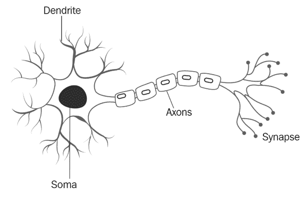
现在，让我们看看人工神经元是如何工作的。假设我们有三个输入 、 和 ，来预测输出 。这些输入乘以权重 、 和 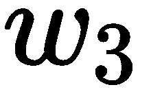 ，并汇总如下:

但是为什么我们要用权重来乘以这些输入呢？因为在计算输出 时，并非所有的输入都同等重要。假设与其他两个输入相比，
时，并非所有的输入都同等重要。假设与其他两个输入相比， 在计算输出时更重要。然后，我们赋予
在计算输出时更重要。然后，我们赋予  一个比其他两个权重更高的值。因此，在将权重与输入相乘时，
一个比其他两个权重更高的值。因此，在将权重与输入相乘时，  将具有比其他两个输入更高的值。简而言之，权重用于加强输入。将输入乘以权重后，我们将它们相加，并添加一个名为bias的值，
将具有比其他两个输入更高的值。简而言之，权重用于加强输入。将输入乘以权重后，我们将它们相加，并添加一个名为bias的值， :
:

如果你仔细看前面的等式，它可能看起来很熟悉？  看起来不像线性回归的方程吗？不就是一条直线的方程吗？我们知道直线的方程式如下:
看起来不像线性回归的方程吗？不就是一条直线的方程吗？我们知道直线的方程式如下:

这里 m 是权重(系数)， x 是输入， b 是偏差(截距)。
嗯，是的。那么，神经元和线性回归有什么区别呢？在神经元中，我们通过应用被称为激活或传递函数的函数 ，将非线性引入结果。因此，我们的输出变成:
，将非线性引入结果。因此，我们的输出变成:
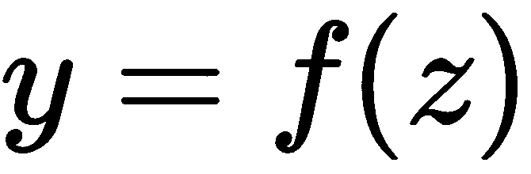
单个人工神经元如下图所示:
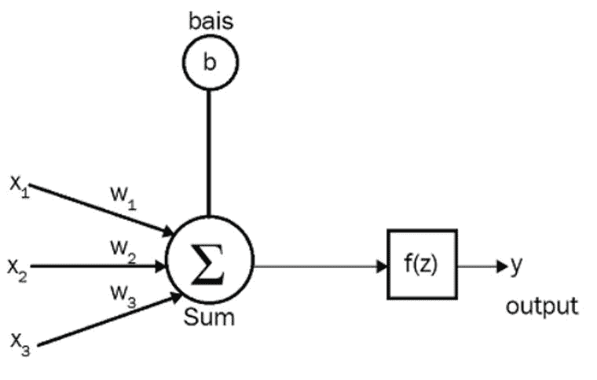
因此，一个神经元接受输入， x ，乘以权重， w，，加上偏置， b，形成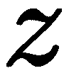，然后我们对 应用激活函数，得到输出，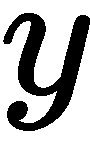。
应用激活函数，得到输出，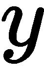。
虽然神经元真的很酷，但我们不能只用一个神经元来执行复杂的任务。这就是为什么我们的大脑有数十亿个神经元，层层堆叠，形成一个网络。同样，人工神经元也是分层排列的。每一层都以这样的方式连接，信息从一层传递到另一层。
典型的人工神经网络由以下几层组成:
每一层都有一组神经元，一层中的神经元与其他层中的所有神经元相互作用。然而，同一层中的神经元不会相互作用。这仅仅是因为相邻层的神经元之间有连接或边缘；但是，同一层的神经元没有任何联系。我们使用术语节点或单元来表示人工神经网络中的神经元。
典型的人工神经网络如下图所示:
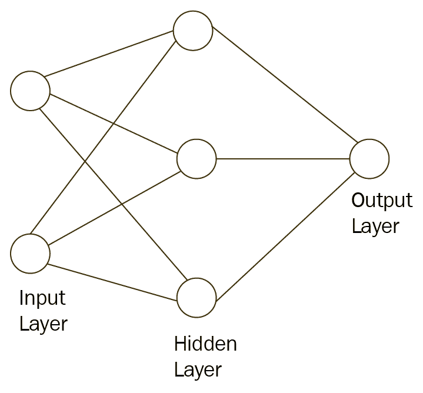
输入层是我们向网络提供输入的地方。输入层中神经元的数量就是我们提供给网络的输入数量。每个输入都会对预测输出产生一些影响。然而，在输入层中不执行任何计算；它只是用来把外界的信息传递给网络。
输入层和输出层之间的任何层都称为隐藏层。它处理从输入层接收的输入。隐藏层负责导出输入和输出之间的复杂关系。也就是说，隐藏层标识数据集中的模式。它主要负责学习数据表示和提取特征。
可以有任意数量的隐藏层；然而，我们必须根据我们的使用情况选择一些隐藏层。对于一个非常简单的问题，我们可以只使用一个隐藏层，但在执行图像识别等复杂任务时，我们会使用许多隐藏层，其中每一层都负责提取重要的特征。当我们有许多隐藏层时，该网络被称为深度神经网络。
处理输入后，隐藏层将其结果发送到输出层。顾名思义，输出层发出输出。输出层中神经元的数量取决于我们希望网络解决的问题类型。
如果是二进制分类，那么输出层的神经元数量就是告诉我们输入属于哪一类的数量。如果它是一个多类分类，比如说，有五个类，如果我们想得到每个类的概率作为输出，那么输出层中的神经元数量是五个，每个发射概率。如果是回归问题，那么我们在输出层有一个神经元。
一个激活函数，也被称为传递函数，在神经网络中起着至关重要的作用。它用于在神经网络中引入非线性。正如我们之前所学的，我们将激活函数应用于输入，输入乘以权重并添加到偏差，即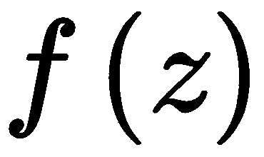，其中 z =(输入*权重)+偏差和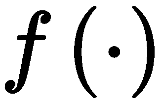是激活函数。如果我们不应用激活函数，那么神经元就简单地类似于线性回归。激活函数的目的是引入非线性变换来学习数据中复杂的潜在模式。
现在让我们来看看一些有趣的常用激活函数。
s形函数是最常用的激活函数之一。它在0和1之间缩放值。sigmoid函数可以定义如下:
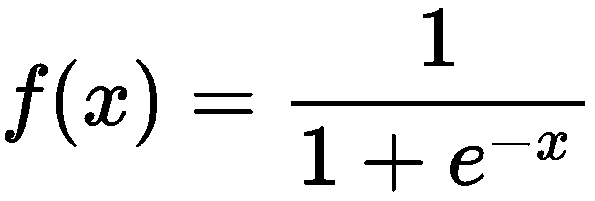
这是一条S形曲线，如下所示:
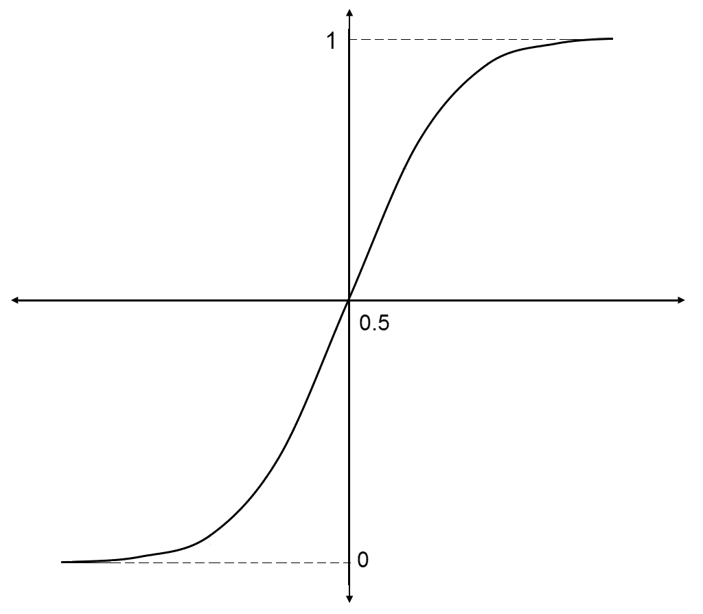
它是可微的，这意味着我们可以找到曲线在任意两点的斜率。它是单调的，这意味着它要么完全不增加，要么完全不减少。sigmoid函数也称为逻辑函数。正如我们所知，概率位于0和1之间，由于sigmoid函数压缩0和1之间的值，因此它用于预测输出的概率。
在Python中，sigmoid函数可以定义如下:
def sigmoid(x):
return 1/ (1+np.exp(-x))
双曲正切(tanh) 函数输出-1到+1之间的值，表示如下:

它也类似于S形曲线。与以0.5为中心的sigmoid函数不同，tanh函数以0为中心，如下图所示:
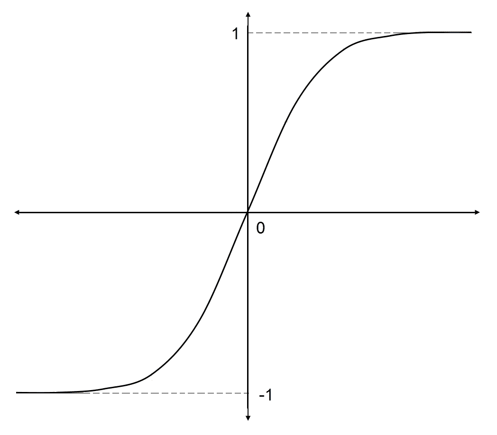
类似于sigmoid函数，它也是一个可微且单调的函数。双曲正切函数实现如下:
def tanh(x):
numerator = 1-np.exp(-2*x)
denominator = 1+np.exp(-2*x)
return numerator/denominator
整流线性单元 ( ReLU )功能是另一种最常用的激活功能。它输出一个从0到无穷大的值。它基本上是一个分段函数，可以表示如下:
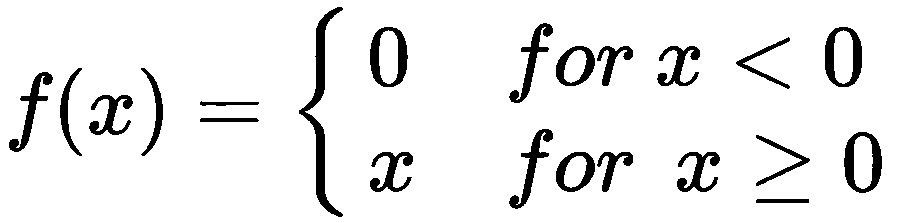
即当 x 的值小于零时 返回零，当 x 的值大于或等于零时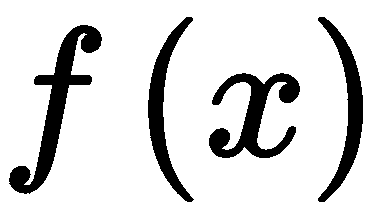返回 x 。它也可以表示如下:
返回零，当 x 的值大于或等于零时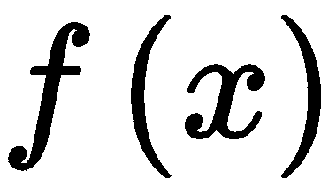返回 x 。它也可以表示如下:
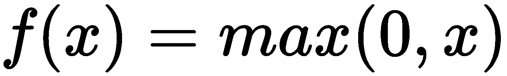
ReLU功能如下图所示:
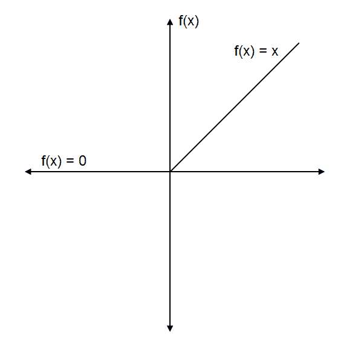
正如我们在上图中看到的，当我们将任何负输入提供给ReLU函数时，它会将其转换为零。所有负值为零的障碍是一个被称为死亡的问题，如果一个神经元总是输出零，那么它就被称为死亡。ReLU函数可以按如下方式实现:
def ReLU(x):
if x<0:
return 0
else:
return x
Leaky ReLU 是ReLU函数的变种，解决了将死的ReLU问题。它不是将每个负输入转换为零，而是对负值有一个小斜率，如下所示:
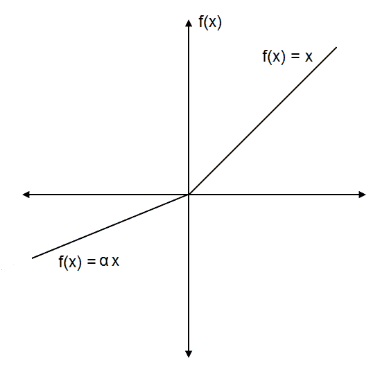
泄漏ReLU可以表示如下:
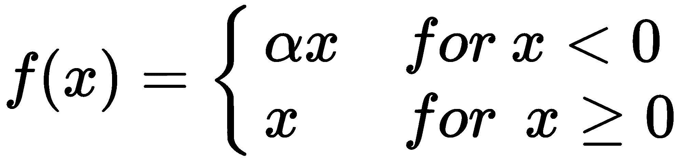
 的值通常设置为0.01。泄漏ReLU功能实现如下:
的值通常设置为0.01。泄漏ReLU功能实现如下:
def leakyReLU(x,alpha=0.01):
if x<0:
return (alpha*x)
else:
return x
我们可以将它们作为参数发送给神经网络，并使网络学习最佳值，而不是将一些默认值设置为。这种激活功能可以称为参数ReLU 功能。我们也可以将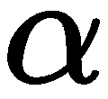的值设置为某个随机值，称为RandoT13】mized ReLU函数。
指数线性单元 ( ELU )和Leaky ReLU一样，对负值的斜率很小。但它不是直线，而是对数曲线，如下图所示:
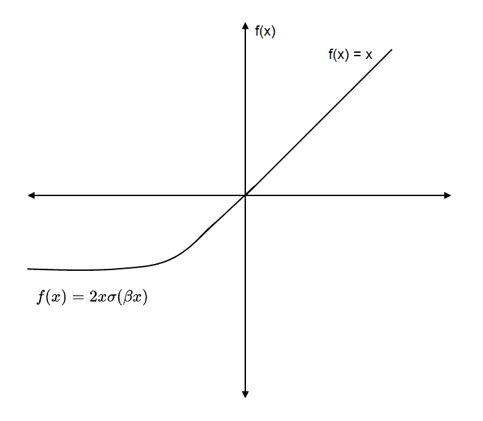
它可以表示如下:

ELU函数在Python中实现如下:
def ELU(x,alpha=0.01):
if x<0:
return ((alpha*(np.exp(x)-1))
else:
return x
Swish 功能是谷歌最近推出的激活功能。与其他单调的激活函数不同，Swish是一个非单调函数，这意味着它既不总是非递增也不总是非递减的。它提供了比ReLU更好的性能。它很简单，可以表达如下:
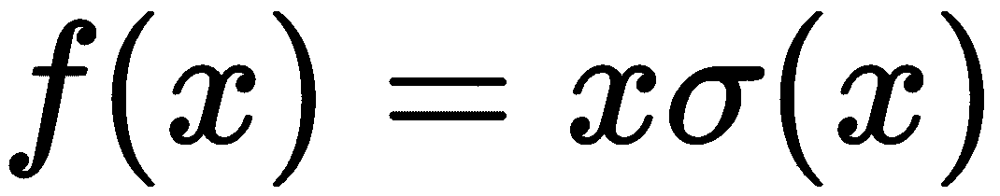
这里，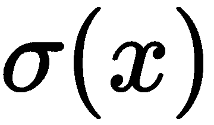是乙状结肠函数。Swish函数如下图所示:

我们还可以重新参数化Swish函数，并将其表示如下:
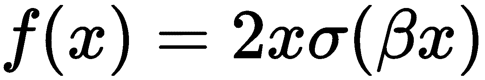
当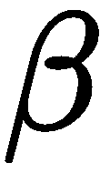的值为0时，那么我们得到恒等函数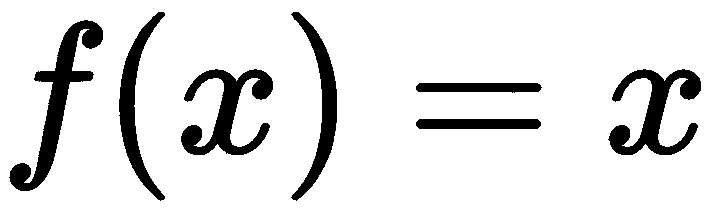。
它变成了一个线性函数，当的值趋于无穷大时，那么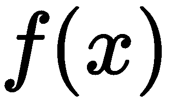就变成了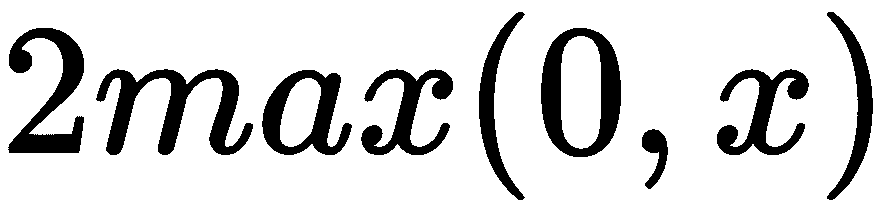，基本上就是ReLU函数乘以某个常数值。因此，的值充当了线性和非线性函数之间的良好插值。swish函数可以如下所示实现:
def swish(x,beta):
return 2*x*sigmoid(beta*x)
softmax函数基本上是sigmoid函数的推广。它通常应用于网络的最后一层，同时执行多类分类任务。它给出了每个类被输出的概率，因此，softmax值的总和将始终等于1。
它可以表示如下:
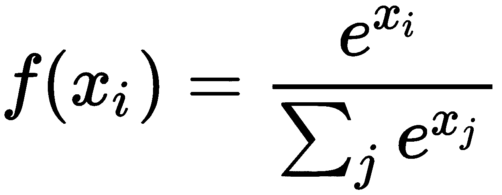
如下图所示，softmax函数将其输入转换为概率:
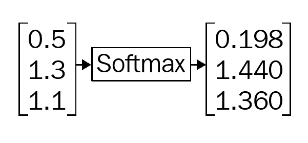
softmax函数可以用Python实现，如下所示:
def softmax(x):
return np.exp(x) / np.exp(x).sum(axis=0)
在这一节中，我们将看到人工神经网络如何学习神经元在层中的堆积位置。网络的层数等于隐藏层数加上输出层数。在计算网络的层数时，我们不考虑输入层。考虑一个两层神经网络，其中一个输入层为 ，一个隐藏层为
，一个隐藏层为 ，一个输出层为
，一个输出层为 ，如下图所示:
，如下图所示:
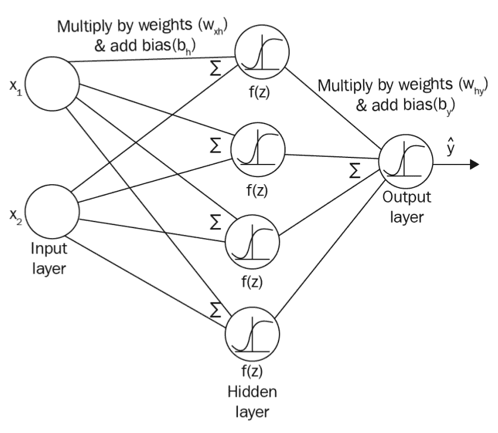
假设我们有两个输入， 和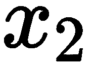，我们必须预测输出，
和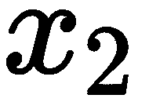，我们必须预测输出， 。由于我们有两个输入，输入层的神经元数量将是两个。我们将隐藏层中的神经元数量设置为4，将输出层中的神经元数量设置为1。现在，输入将乘以权重，然后我们添加偏差，并将结果值传播到将应用激活函数的隐藏层。
。由于我们有两个输入，输入层的神经元数量将是两个。我们将隐藏层中的神经元数量设置为4，将输出层中的神经元数量设置为1。现在，输入将乘以权重，然后我们添加偏差，并将结果值传播到将应用激活函数的隐藏层。
在此之前，我们需要初始化权重矩阵。在现实世界中，我们不知道哪个输入比另一个更重要，因此我们可以对它们进行加权并计算输出。因此，我们将随机初始化权重和偏差值。隐藏层的输入之间的权重和偏差值分别由 和
和 表示。权重矩阵的维数呢？权重矩阵的维数必须是当前层神经元的数 x下一层神经元的数。这是为什么呢？
表示。权重矩阵的维数呢？权重矩阵的维数必须是当前层神经元的数 x下一层神经元的数。这是为什么呢？
因为这是一个基本的矩阵乘法规则。要将任意两个矩阵 AB 相乘，矩阵 A 的列数必须等于矩阵 B 的行数。所以，权重矩阵的维数 应该是输入层的神经元数量 x 隐藏层的神经元数量，即2×4:
应该是输入层的神经元数量 x 隐藏层的神经元数量，即2×4:
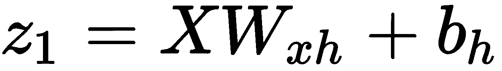
前面的等式表示，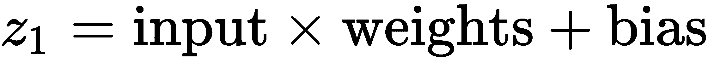。现在，这被传递到隐藏层。在隐藏层中，我们对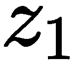应用一个激活函数。让我们使用sigmoid  激活功能。然后，我们可以写:
激活功能。然后，我们可以写:
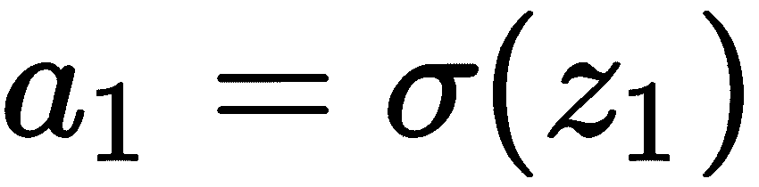
在应用激活函数之后，我们再次将结果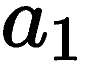乘以新的权重矩阵，并添加在隐藏层和输出层之间流动的新的偏置值。我们可以将这个权重矩阵和偏差分别表示为 和
和 。权重矩阵的维数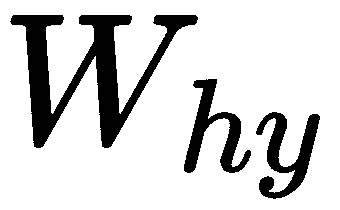将是隐藏层中神经元的数量 x输出层中神经元的数量。因为我们在隐藏层中有四个神经元，在输出层中有一个神经元，所以
。权重矩阵的维数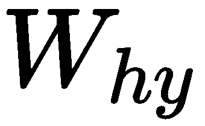将是隐藏层中神经元的数量 x输出层中神经元的数量。因为我们在隐藏层中有四个神经元，在输出层中有一个神经元，所以 矩阵维数将是4×1。因此，我们将乘以权重矩阵
矩阵维数将是4×1。因此，我们将乘以权重矩阵 ，并添加偏差
，并添加偏差 ，并将结果
，并将结果 传递给下一层，即输出层:
传递给下一层，即输出层:
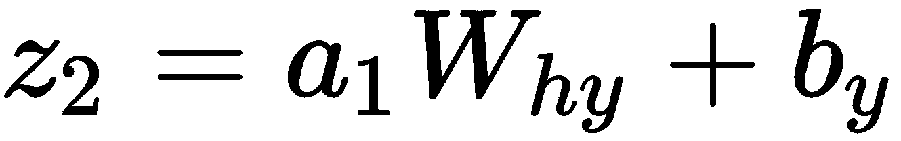
现在，在输出层，我们对应用一个sigmoid函数，这将产生一个输出值:

从输入层到输出层的整个过程被称为正向传播。因此，为了预测输出值，输入从输入层传播到输出层。在此传播过程中，它们在每一层上乘以各自的权重，并在它们的顶部应用激活函数。完整的正向传播步骤如下所示:


前面的正向传播步骤可以在Python中实现，如下所示:
def forward_prop(X):
z1 = np.dot(X,Wxh) + bh
a1 = sigmoid(z1)
z2 = np.dot(a1,Why) + by
y_hat = sigmoid(z2)
return y_hat
正向传播很酷吧？但是我们如何知道神经网络生成的输出是否正确呢？我们定义了一个新函数，称为 co st函数 (  )，也称为损失函数 (
)，也称为损失函数 (  )，它告诉我们我们的神经网络表现如何。有许多不同的成本函数。我们将使用均方误差作为成本函数，它可以定义为实际输出和预测输出之间的平方差的平均值:
)，它告诉我们我们的神经网络表现如何。有许多不同的成本函数。我们将使用均方误差作为成本函数，它可以定义为实际输出和预测输出之间的平方差的平均值:
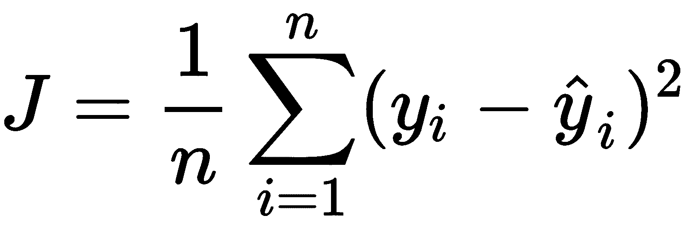
这里， 是训练样本数，
是训练样本数， 是实际输出，
是实际输出， 是预测输出。
是预测输出。
好了，我们知道了成本函数是用来评估我们的神经网络的。也就是说，它告诉我们我们的神经网络在预测输出方面有多好。但问题是我们的网络实际上是在哪里学习呢？在前向传播中，网络只是试图预测输出。但是它如何学会预测正确的输出呢？在下一节中，我们将对此进行研究。
如果成本或损失非常高，那么这意味着我们的网络没有预测正确的输出。因此，我们的目标是最小化成本函数，以便我们的神经网络预测会更好。怎样才能最小化成本函数？也就是说，怎样才能把损失/成本降到最低？我们了解到神经网络使用前向传播进行预测。因此，如果我们可以改变正向传播中的一些值，我们就可以预测正确的输出，并将损耗降至最低。但是在正向传播中我们可以改变什么值呢？显然，我们不能改变输入和输出。我们现在只剩下权重和偏差值。记住，我们只是随机初始化权重矩阵。由于权重是随机的，它们不会是完美的。现在，我们将更新这些权重矩阵( 和
和 )，以使我们的神经网络给出正确的输出。我们如何更新这些权重矩阵？这里出现了一种叫做梯度下降的新技术。
)，以使我们的神经网络给出正确的输出。我们如何更新这些权重矩阵？这里出现了一种叫做梯度下降的新技术。
通过梯度下降，神经网络学习随机初始化的权重矩阵的最优值。有了权重的最优值，我们的网络可以预测正确的输出并最小化损失。
现在，我们将探索如何使用梯度下降来学习权重的最佳值。梯度下降是最常用的优化算法之一。它用于最小化成本函数，这允许我们最小化误差并获得尽可能低的误差值。但是梯度下降是如何找到最优权重的呢？先打个比方。
假设我们在一个山顶上，如下图所示，我们想到达山顶的最低点。可能有许多区域看起来像山的最低点，但我们必须到达最低点，实际上是所有最低点。
也就是说，当全球最低点存在时，我们不应该停留在一个点上，认为这是最低点:
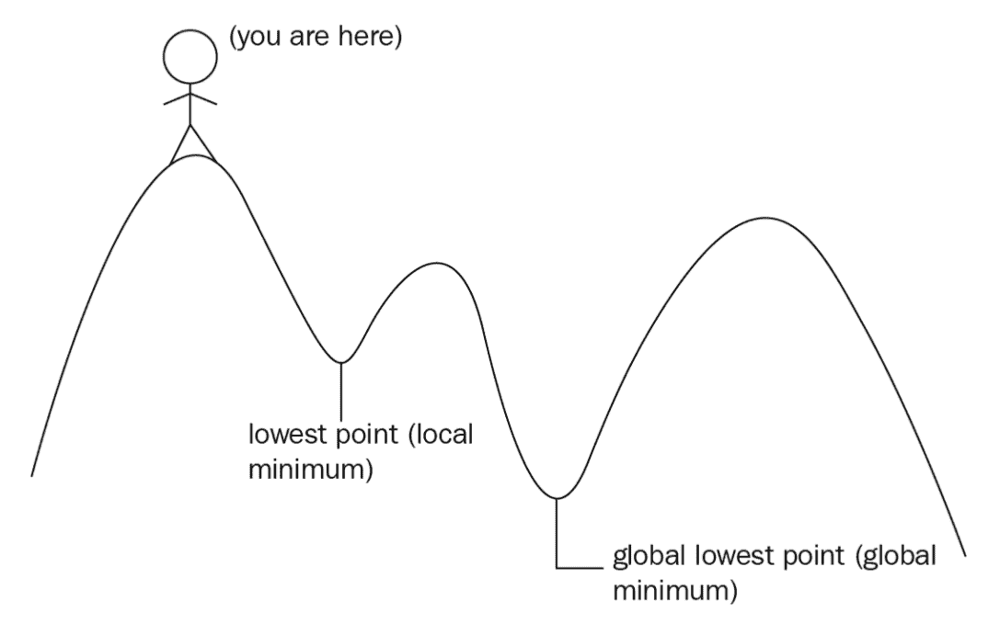
类似地，我们可以将成本函数表示如下。这是成本与重量的关系图。我们的目标是最小化成本函数。也就是说，我们必须达到成本最小的最低点。下图中的实心黑点显示了随机初始化的权重。如果我们把这一点向下移动，那么我们可以到达成本最小的点:

但是怎么才能把这个点(初始重量)下移呢？怎样才能下降到最低点？渐变用于从一点移动到另一点。因此，我们可以通过计算成本函数相对于该点(初始权重)的梯度来移动该点(初始权重)，这是 。
。
梯度是导数，实际上是切线的斜率，如下图所示。因此，通过计算梯度，我们下降(向下移动)并到达成本最小的最低点。梯度下降是一种一阶优化算法，这意味着我们在执行更新时只考虑一阶导数:
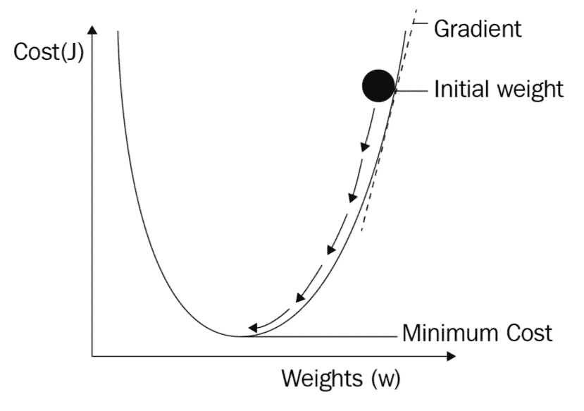
因此，通过梯度下降，我们将我们的权重移动到成本最小的位置。但是，我们如何更新权重呢？
由于正向传播，我们处于输出层。我们现在将将网络从输出层反向传播到输入层，并计算成本函数相对于输出层和输入层之间所有权重的梯度，以便我们可以最小化误差。计算梯度后，我们使用权重更新规则更新旧的权重:
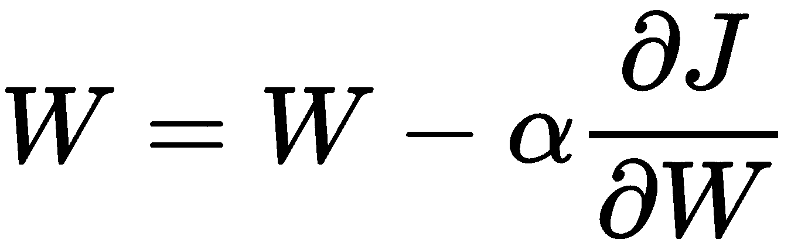
这意味着权重=权重-α *梯度。
什么是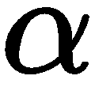？它被称为学习率。如下图所示，如果学习率很小，那么我们向下迈一小步，我们的梯度下降可以很慢。
如果学习率很大，那么我们就迈出一大步，我们的梯度下降将会很快，但我们可能无法达到全局最小值，并陷入局部最小值。因此，学习率应该被最佳地选择:
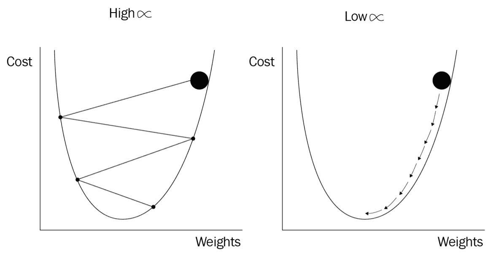
将网络从输出层反向传播到输入层，并使用梯度下降来更新网络的权重以最小化损失的整个过程称为反向传播。现在我们对反向传播有了基本的了解，我们将通过一步一步地详细了解它来加强我们的理解。我们要看一些有趣的数学，所以戴上你的微积分帽子，按照步骤来。
因此，我们有两个权重，一个 ，输入隐藏层权重，另一个
，输入隐藏层权重，另一个 ，隐藏输出层权重。我们需要找到这两个权重的最佳值，使我们的误差最小。因此，我们需要计算成本函数
，隐藏输出层权重。我们需要找到这两个权重的最佳值，使我们的误差最小。因此，我们需要计算成本函数 相对于这些权重的导数。由于我们是反向传播，也就是从输出层到输入层，我们的第一个权重将是
相对于这些权重的导数。由于我们是反向传播，也就是从输出层到输入层，我们的第一个权重将是 。所以，现在我们需要计算对
。所以，现在我们需要计算对 的导数。我们如何计算导数？首先，让我们回忆一下我们的成本函数，:
的导数。我们如何计算导数？首先，让我们回忆一下我们的成本函数，:

我们不能直接从前面的方程计算导数，因为没有
 术语。所以，我们不直接计算导数，而是计算偏导数。让我们回忆一下正向传播方程:
术语。所以，我们不直接计算导数，而是计算偏导数。让我们回忆一下正向传播方程:

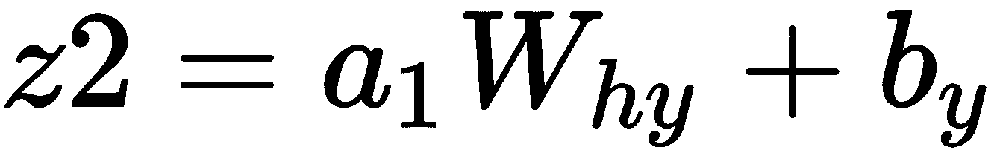
首先，我们将计算关于 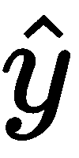 的偏导数，然后从  我们将计算关于
我们将计算关于  的偏导数。从 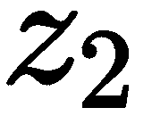 ，我们可以直接计算出我们的导数
的偏导数。从 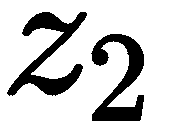 ，我们可以直接计算出我们的导数  。基本上是链式法则。因此，
。基本上是链式法则。因此，  相对于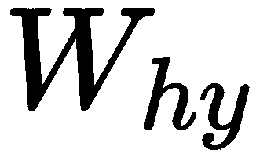的导数变成如下:
相对于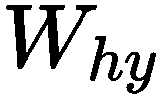的导数变成如下:

现在，我们将计算上述等式中的每一项:
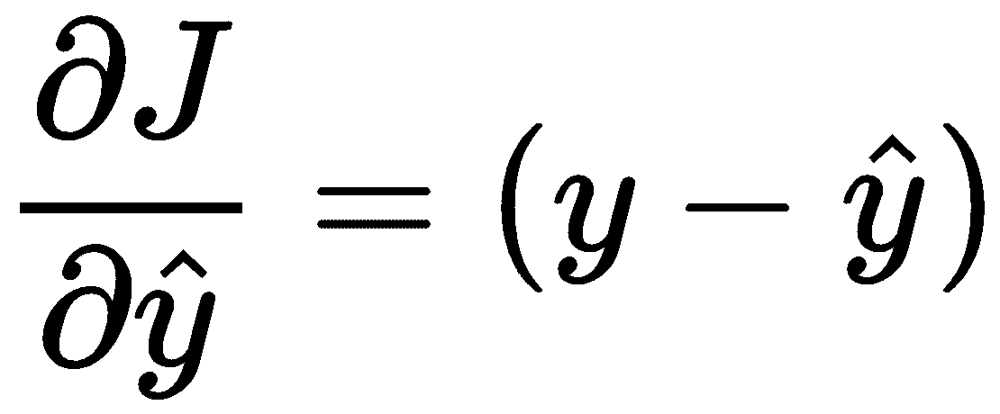
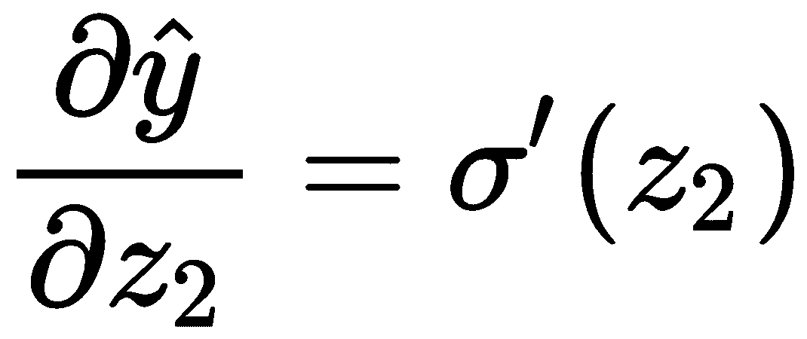
这里，是我们的sigmoid激活函数的导数。我们知道，sigmoid函数是  ，那么sigmoid函数的导数就会是 :
，那么sigmoid函数的导数就会是 :
因此，代入等式 (1) 中的所有前述项，我们可以写出:

现在我们需要计算 相对于下一个权重  的导数。
的导数。
同样，我们不能直接从计算 的导数，因为我们在中没有任何
的导数，因为我们在中没有任何 项。所以，我们需要使用链式法则。让我们再次回忆一下正向传播的步骤:
项。所以，我们需要使用链式法则。让我们再次回忆一下正向传播的步骤:


现在，根据链式法则，对 的导数为:
的导数为:
我们已经看到如何计算前面等式中的第一项；现在，我们将了解如何计算其余各项:


因此，代入等式 (3) 中的所有前述项，我们可以写出:
在我们计算了两个权重 和
和 的梯度后，我们将根据权重更新规则更新我们的初始权重:
的梯度后，我们将根据权重更新规则更新我们的初始权重:
就是这样！这就是我们如何更新网络的权重并最小化损失。如果你还不了解梯度下降，不用担心！在第3章、梯度下降及其变体中，我们将深入基础，更详细地学习梯度下降及其几种变体。现在，让我们看看如何用Python实现反向传播算法。
在两个方程 (2) 和 (4) 中，我们都有这一项，所以不用反复计算它们，我们就称它们为delta2:
delta2 = np.multiply(-(y-yHat),sigmoidPrime(z2))
现在，我们计算相对于 的梯度。参考等式 (2) :
的梯度。参考等式 (2) :
dJ_dWhy = np.dot(a1.T,delta2)
我们计算相对于 的梯度。参考方程式 (4) :
的梯度。参考方程式 (4) :
delta1 = np.dot(delta2,Why.T)*sigmoidPrime(z1)
dJ_dWxh = np.dot(X.T,delta1)
我们将根据我们的权重更新规则等式 (5) 和 (6) 更新权重，如下所示:
Wxh = Wxh - alpha * dJ_dWhy
Why = Why - alpha * dJ_dWxh
反向传播的完整代码如下所示:
def backword_prop(y_hat, z1, a1, z2):
delta2 = np.multiply(-(y-y_hat),sigmoid_derivative(z2))
dJ_dWhy = np.dot(a1.T, delta2)
delta1 = np.dot(delta2,Why.T)*sigmoid_derivative(z1)
dJ_dWxh = np.dot(X.T, delta1)
Wxh = Wxh - alpha * dJ_dWhy
Why = Why - alpha * dJ_dWxh
return Wxh,Why
在继续之前，让我们熟悉一下神经网络中的一些常用术语:
假设我们有12，000个训练样本，并且我们的批量大小是6，000。我们需要两次迭代来完成一个纪元。也就是说，在第一次迭代中，我们传递前6000个样本，并执行前向传递和后向传递；在第二次迭代中，我们传递接下来的6000个样本，并执行前向传递和后向传递。经过两次迭代后，我们的神经网络将看到全部12，000个训练样本，这使其成为一个纪元。
我们刚刚学习了梯度下降是如何工作的，以及如何为一个简单的两层网络从头开始编写梯度下降算法。但是对复杂的神经网络实现梯度下降并不是一项简单的任务。除了实现之外，为复杂的神经网络架构调试梯度下降也是一项乏味的任务。令人惊讶的是，即使有一些错误的梯度下降实现，网络也会学到一些东西。然而，显然，与梯度下降的无缺陷实现相比，它的性能不会很好。
如果模型没有给我们任何错误，甚至在梯度下降算法的错误实现中也学到了一些东西，我们如何评估并确保我们的实现是正确的？这就是为什么我们使用梯度检查算法。这将有助于我们通过数值检查导数来验证梯度下降的实现。
梯度检查主要用于调试梯度下降算法，并验证我们的实现是否正确。
好吧。那么，梯度检查是如何工作的呢？在梯度检查中，我们主要比较数值梯度和解析梯度。等等！什么是数值梯度和解析梯度？
分析梯度意味着我们通过反向传播计算的梯度。数值梯度是梯度的数值近似值。让我们用一个例子来探讨这个问题。假设我们有一个简单的平方函数，。
上述函数的解析梯度使用幂法则计算，如下所示:
现在，让我们看看如何在数值上近似梯度。我们使用梯度的定义来计算梯度，而不是使用幂法则来计算梯度。我们知道函数的梯度或斜率基本上给出了函数的陡度。
因此，函数的梯度或斜率定义如下:

函数的梯度可以如下给出:
我们使用前面的方程，用数值方法近似梯度。这意味着我们正在手动计算函数的斜率，而不是使用下图所示的幂法则:
通过幂法则 (7) 计算梯度，并在数值上近似梯度 (8) 本质上给我们相同的值。我们来看看【T6(7)】和 (8) 如何在Python中给出相同的值。
定义平方函数:
def f(x):
return x**2
定义ε和输入值:
epsilon = 1e-2
x=3
计算分析梯度:
analytical_gradient = 2*x
print analytical_gradient
6
计算数值梯度:
numerical_gradient = (f(x+epsilon) - f(x-epsilon)) / (2*epsilon)
print numerical_gradient
6.000000000012662
您可能已经注意到，计算平方函数的数值梯度和解析梯度实际上给了我们相同的值，即当 x =3 时的6。
当反向传播网络时，我们计算分析梯度以最小化成本函数。现在，我们需要确保我们计算的解析梯度是正确的。因此，让我们验证我们近似成本函数的数值梯度。
 相对于
相对于 的梯度可以数值近似如下:
的梯度可以数值近似如下:

它表示如下:

我们检查解析梯度和近似数值梯度是否相同；如果不是，那么在我们的解析梯度计算中有一个错误。我们不想检查数值梯度和解析梯度是否完全相同；因为我们只是在近似数值梯度，所以我们把解析梯度和数值梯度之间的差异作为一个误差来检查。如果差值小于或等于一个很小的数，比如说， 1e-7 ，那么我们的实现就很好。如果差值大于 1e-7 ，那么我们的实现是错误的。
我们计算相对误差，而不是将误差直接计算为数值梯度和解析梯度之差。它可以定义为差值与梯度绝对值之比的比值:
当相对误差的值小于或等于一个小的阈值时，比如说， 1e-7 ，那么我们的实现是好的。如果相对误差大于 1e-7 ，那么我们的实现就是错误的。现在让我们看一下如何一步一步地用Python实现梯度检查算法。
首先，我们计算权重。参考方程式 (9):
weights_plus = weights + epsilon
weights_minus = weights - epsilon
计算J_plus和J_minus。参考方程式 (9):
J_plus = forward_prop(x, weights_plus)
J_minus = forward_prop(x, weights_minus)
现在，我们可以计算 (9) 中给出的数值梯度，如下所示:
numerical_grad = (J_plus - J_minus) / (2 * epsilon)
分析梯度可以通过反向传播获得:
analytical_grad = backword_prop(x, weights)
根据等式 (10) 计算相对误差如下:
numerator = np.linalg.norm(analytical_grad - numerical_grad)
denominator = np.linalg.norm(analytical_grad) + np.linalg.norm(numerical_grad)
relative_error = numerator / denominator
如果相对误差小于一个小的阈值，比如说1e-7，那么我们的梯度下降实现就是正确的；否则，它就是错误的:
if relative_error < 1e-7:
print ("The gradient is correct!")
else:
print ("The gradient is wrong!")
因此，在梯度检查的帮助下，我们确保我们的梯度下降算法是无缺陷的。
把我们到目前为止学到的所有概念放在一起，我们将看到如何从头开始构建一个神经网络。我们将理解神经网络如何学习执行异或门操作。只有当XOR门只有一个输入为1时，它才返回1，否则它返回0，如下表所示:
为了执行XOR门运算，我们构建了一个简单的两层神经网络，如下图所示。如您所见，我们有一个包含两个节点的输入层:一个包含五个节点的隐藏层和一个包含一个节点的输出层:
我们将逐步理解神经网络如何学习XOR逻辑:
import numpy as np
import matplotlib.pyplot as plt
%matplotlib inline
X = np.array([ [0, 1], [1, 0], [1, 1],[0, 0] ])
y = p.array([ [1], [1], [0], [0]])
num_input = 2
num_hidden = 5
num_output = 1
Wxh = np.random.randn(num_input,num_hidden)
bh = np.zeros((1,num_hidden))
Why = np.random.randn (num_hidden,num_output)
by = np.zeros((1,num_output))
def sigmoid(z):
return 1 / (1+np.exp(-z))
def sigmoid_derivative(z):
return np.exp(-z)/((1+np.exp(-z))**2)
def forward_prop(X,Wxh,Why):
z1 = np.dot(X,Wxh) + bh
a1 = sigmoid(z1)
z2 = np.dot(a1,Why) + by
y_hat = sigmoid(z2)
return z1,a1,z2,y_hat
def backword_prop(y_hat, z1, a1, z2):
delta2 = np.multiply(-(y-y_hat),sigmoid_derivative(z2))
dJ_dWhy = np.dot(a1.T, delta2)
delta1 = np.dot(delta2,Why.T)*sigmoid_derivative(z1)
dJ_dWxh = np.dot(X.T, delta1)
return dJ_dWxh, dJ_dWhy
def cost_function(y, y_hat):
J = 0.5*sum((y-y_hat)**2)
return J
alpha = 0.01
num_iterations = 5000
cost =[]
for i in range(num_iterations):
z1,a1,z2,y_hat = forward_prop(X,Wxh,Why)
dJ_dWxh, dJ_dWhy = backword_prop(y_hat, z1, a1, z2)
#update weights
Wxh = Wxh -alpha * dJ_dWxh
Why = Why -alpha * dJ_dWhy
#compute cost
c = cost_function(y, y_hat)
cost.append(c)
plt.grid()
plt.plot(range(num_iteratins),cost)
plt.title('Cost Function')
plt.xlabel('Training Iterations')
plt.ylabel('Cost')
正如您在下图中所观察到的，损失随着训练迭代而减少:
因此，在这一章中，我们对人工神经网络和它们如何学习有了一个总体的了解。
我们从理解什么是深度学习以及它与机器学习的不同开始这一章。后来，我们学习了生物和人工神经元是如何工作的，然后我们探索了人工神经网络中的输入、隐藏和输出层，以及几种类型的激活函数。
接下来，我们学习了什么是前向传播，以及ANN如何使用前向传播来预测输出。在这之后，我们学习了人工神经网络如何使用反向传播进行学习和优化。我们学习了一种叫做梯度下降的优化算法，它可以帮助神经网络最小化损失并做出正确的预测。我们还学习了梯度检查，这是一种用于评估梯度下降的技术。在本章的最后，我们从头开始实现了一个神经网络来执行XOR门操作。
在下一章中，我们将了解一个最强大和最常用的深度学习库，名为 TensorFlow 。
让我们通过回答以下问题来评估我们新获得的知识:
您也可以查看这些资源以了解更多信息: